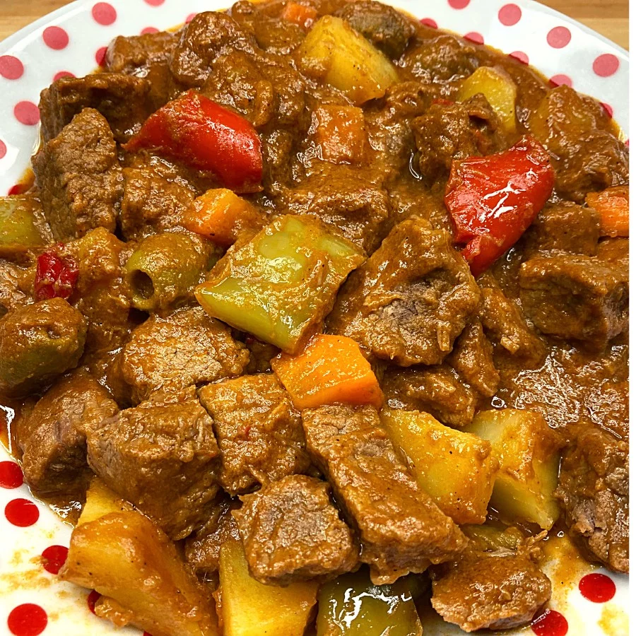

Caldereta Recipe

Ingredients:
- 2 lbs beef, cubed
- 2 cups beef broth
- 1 cup tomato sauce
- 1/2 cup liver spread
- 1 large onion, chopped
- 3 cloves garlic, minced
- 1 large potato, cubed
- 1 large carrot, cubed
- 1 red bell pepper, sliced
- 1 green bell pepper, sliced
- 2 tbsp soy sauce
- 1 tsp salt
- 1/2 tsp black pepper
- 1/2 cup green peas
- 1/2 cup grated cheese
- 2 tbsp cooking oil
Instructions:
- Heat oil in a pan and sauté garlic and onions until fragrant.
- Add the beef and cook until browned.
- Pour in tomato sauce and beef broth. Bring to a boil and let it simmer for about an hour or until the beef is tender.
- Add the liver spread, soy sauce, salt, and black pepper. Stir well.
- Add the potatoes, carrots, and green peas. Cook until vegetables are tender.
- Stir in the bell peppers and grated cheese. Let it cook for another 5 minutes.
- Serve hot with steamed rice. Enjoy!
Back to Menu